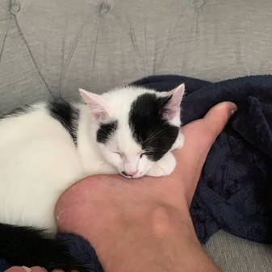
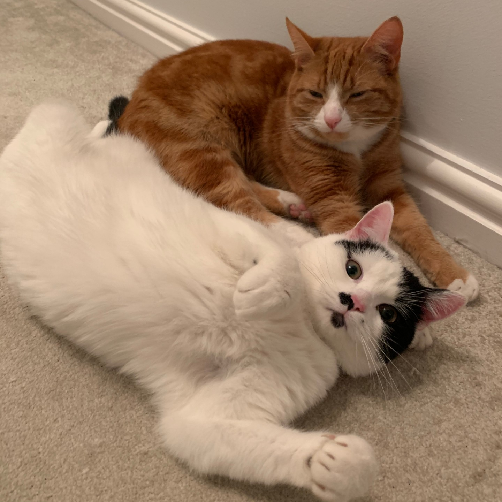
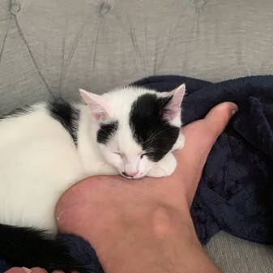
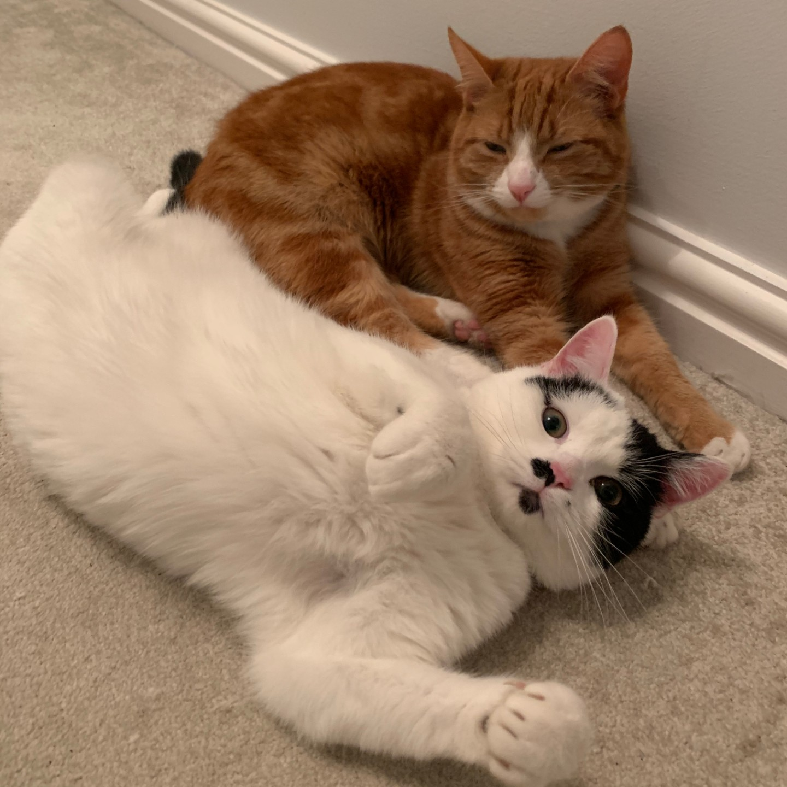

3.1 Review the benefits and drawbacks of IT tools and systems used in terms of productivity and efficiency – could you have been more efficient when making your website? How? Could you have done it in teams?
The systems and tools used are definitely fit for purpose. Using Github to back up versions of my code was occasionally time consuming - had I known how to use Git (Bash) this could have been far more efficient.
Visual studio as always has been great to use and Trello has helped identify important tasks and break down the components. Having been exposed to HTML/CSS only a few days ago, I imagine that it would have been a lot more efficient to have some more prior knowledge.
Working in teams could have made the production of the website more efficient, as the code components could have been shared i.e. one person codes the nav bar, one person codes a button etc. The core backbone of the site could have been constructed jointly and the personalised styling elements separately.
3.2 Describe ways to improve productivity and efficiency
What a rabbit hole this question is... Being new to coding, it has been quite difficult to know how to approach the project. Learning from the previous project, I tried not to over complicate things but still ran into some issues from a time perspective in terms of learning and implementing code to get the site to do what I wanted to. Ideally, writing simple and effective code that can be applied in multiple scenarios. Calling on CSS classes for example rather than coding individual elements.
Trello was a huge help for me to stay task focused but I did still occasionally wander between tasks and not stick to the plan. It seems easy to get lost in minutia rather than focusing on the task at hand - Trello has helped maintin the focus considerably.
Up-skilling knowledge would have been useful for both productivity and efficiency and a more clear plan of upcoming time constraints (meetings/classes/talks) could have been helpful but this would be expected in any workplace. Knowing and using Git would also have helped to reduce any negative impact from making errors.
3.3 Develop solutions to improve own productivity using IT in digital projects – what would you do differently next time? Team work? Use of Slack?
Next time I would definitely use my peers more. Sharing ideas and solutions to problems could have drastically improved my productivity. There was a small amount of code snippets shared on slack but not as much as could have been.
After constructing the core HTML file, I think it could have been better for me to approach the critical code elements prior to focusing on some of the design elements, it would have given a much better indication of the time I could spend on the design elements.
3.4 Describe how you would go about testing digital solutions
In terms of testing digital solutions, I would start small - testing individual elements of the project as they are composed to ensure they are functioning as designed. Once tested at the smaller level, I would integrate/add to larger elements and test that they perform the desired outcome in the larger context. As the solution becomes bigger and more complex I would ask someone else to test the solution to check that there isn't anything that I am missing. If the solution has a customer requirement then it would be advisable to have the end product tested by customers, to ensure they are happy with the product and design.
Throughout all of these testing phases, I would seek feedback on what has been done to incorporate better practice/customer experience as the product becomes more complete.
 


